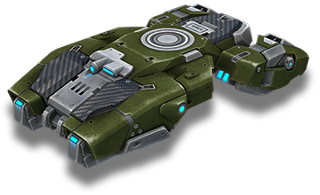
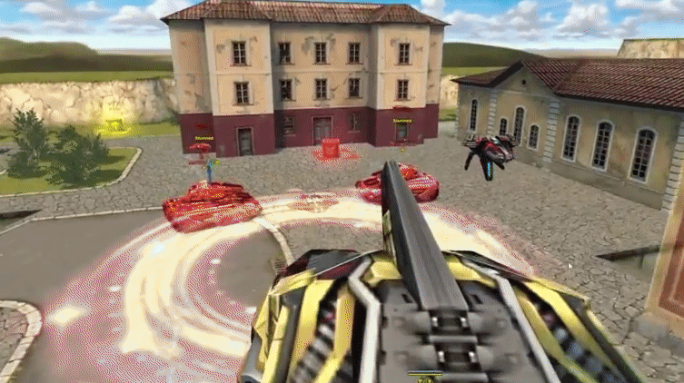
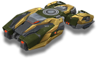

概括
由于其发动机的持续工作，霍珀底盘可以在低空悬停在地面上。
当霍珀受到敌人的火力攻击时，它会尝试将自己返回到稳定的位置。
如果滚动限制超过某个最大值，引擎将发生故障，霍珀将翻转。
底盘运动的独特之处在于它不转动，而是向给定方向扫射。
底盘将完全适合移动游戏。在 PC 上，控制船体有两种不同的可能性：键盘和鼠标以及仅键盘。
仅在禁用键盘和鼠标控件的情况下使用时，坦克就像任何其他坦克一样被控制。
但是，当使用键盘和鼠标时，底盘会向前、向后和向一侧移动。
扫射方向取决于当前相机位置，向前、向后、向左和向右键也是如此。
底盘也随着相机转动。
车库中的描述
轻型底盘。它以出色的机动性翱翔在水面之上。
它的过速装置不仅可以击晕敌方坦克并点燃敌人的坦克，
还可以将您抛向空中，以便跳过障碍物。
«霍珀»悬停坦克使用最大可用的反重力发动机资源，让加油机追逐他们的梦想——远离危险飞上天空。
底盘没有装甲和防御系统，而是有一个爆炸跳跃引擎，可以将你的坦克扔到很高的高度。
Antigravs 在空中提供稳定性，创造巨大的战术机会。
在你跳跃的那一刻不幸靠近你的对手会后悔。
引爆引擎会立即使空气电离，使地面上爬行的一切都震惊和燃烧。
您是否有足够的勇气突破敌人的防御或带着旗帜进行令人惊讶的逃脱？«霍珀» 可以两者兼得。
装备改造

过速装置
爆炸跳跃

皮肤

霍珀标准

霍珀 XT